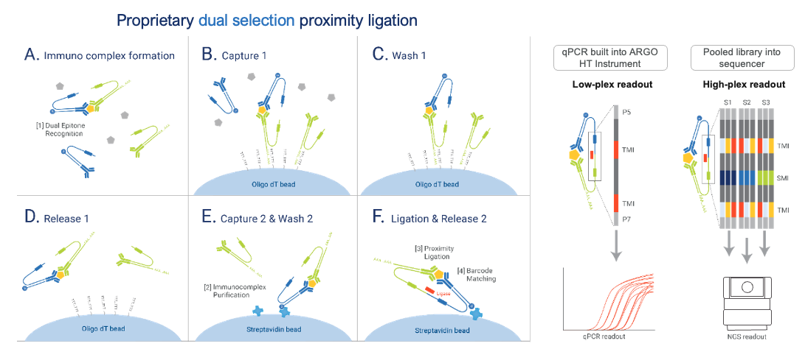
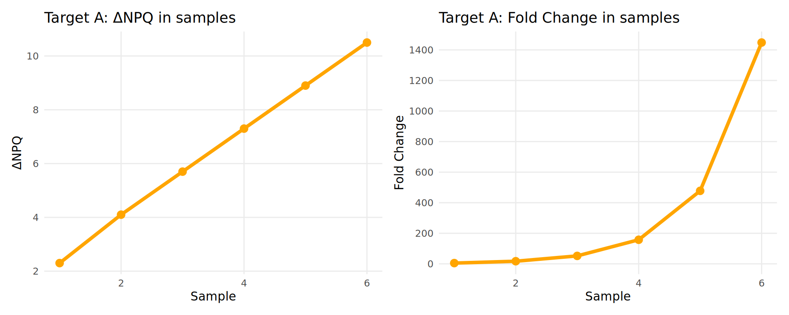

Understanding NULISAseq Data
Before diving into data analysis, it’s important to understand how NULISAseq technology works and how the data is generated and normalized.
What is NULISA™ Technology?
NULISA (NUcleic acid-Linked Immuno-Sandwich Assay) is a highly sensitive protein quantification platform that combines immunoassay specificity with next-generation sequencing readout.
The NULISAseq platform uses a proprietary dual selection proximity ligation approach to obtain high sensitivity and high signal-to-noise ratio for multiplexed protein detection:

Key Components:
- Verified antigen-specific antibody pairs - Two antibodies that bind different epitopes on the target protein
- Antibody-specific barcodes - Unique DNA sequences attached to each antibody
- Bridging oligos - Connect the barcodes only when both antibodies bind the same target
- PolyA-tailed oligos - Enable sequential capture on beads (Capture 1 step)
- Biotinylated oligos - Enable sequential capture on beads (Capture 2 step)
Technical Workflow
The assay follows these steps:

This dual selection removes assay background and drastically improves signal-to-noise ratio.
Learn More About NULISA™ Technology
For a comprehensive understanding of the NULISA™ platform, we recommend:
NULISA™ Publication
Feng, W., Beer, J.C., Hao, Q. et al. (2023). “NULISA: a proteomic liquid biopsy platform with attomolar sensitivity and high multiplexing.” Nature Communications 14, 7238.
Read the full article
NULISA™ Platform Overview
Watch the NULISATM Platform Video for a visual explanation of the technology and workflow.
Technical Documentation
For detailed technical notes on assay design, normalization methods, and quality control:
See Technical Documentation in the Additional Resources chapter.
Available NULISAseq Panels
Alamar Biosciences offers several curated panels for disease-specific research, including:
- Inflammation Panel: 250+ immune response markers including 120+ cytokines and chemokines
- CNS Disease Panel: 120+ neuro-specific and neuro inflammation-related proteins
- Mouse Panel: 120+ inflammation, neuro-degeneration and oncogenesis proteins specific to mouse model
- Custom assays: Develop your own biomarker assays with the NULISAqpcr Custom Assay Development Kit
Explore Current Panels: For detailed panel specifications, target lists, and custom assay options, visit the Alamar Biosciences website.
Data Normalization
NULISAseq uses a multi-step normalization process to make protein measurements comparable across samples and plates.
Raw Data: Sequencing Counts
The output from the sequencer is read counts for each target protein in each sample:
- Each protein has a unique barcode (target-specific molecular identifier, TMI)
- Each sample also has a unique barcode (sample-specific molecular identifier, SMI)
- More reads = more protein present
- Raw counts range from 0 to millions
Step 1: Internal Control (IC) Normalization
Purpose: Correct for sample-to-sample technical variation
Method:
- Each sample includes an internal control spike-in
- Divide each target’s read count by the sample’s IC count
Formula:
\[ \text{IC-normalized count} = \text{Raw count} / \text{IC count} \]
Step 2: Inter-Plate Control (IPC) Normalization
Purpose: Correct for plate-to-plate technical variation
Method:
- Calculate target-specific median IC-normalized counts across 3 inter-plate controls (IPCs)
- Divide IC-normalized counts by these IPC target-specific medians
- Rescale by multiplying by 10⁴
Formula:
\[ \text{IPC-normalized count} = (\text{IC-normalized count} / \text{IPC median}) × 10⁴ \]
Step 3: Log2 Transformation
Purpose: Create NULISA Protein Quantification (NPQ) values in log2 scale
Method:
- Add 1 to all values (avoid log(0))
- Take log2 transformation
Formula:
\[ \text{NPQ} = log_2(\text{IPC-normalized count} + 1) \]
Special normalization for high-abundance targets
Most targets in NULISAseq panels are measured at their lower limit of detection. However, certain targets have exceptionally high endogenous levels that would saturate standard detection:
High-abundance targets:
- Inflammation Panel: CRP and KNG1 in human plasma and serum samples
- CNS Panel: APOE and CRP in human plasma and serum samples
- Mouse Panel: Crp in mouse plasma and serum samples
Special tuning strategy: To accommodate both high-abundance and low-abundance targets in the same panel, these targets use a special algorithm during normalization. This transformation is applied before the log2 transformation step.
Key Note:
- The listed LOD for these targets represents the upper limit of detection
- NPQ values are valid and comparable for downstream analysis
- NPQ values for these targets are interpreted in the usual way (one unit increase = doubling of abundance)
- Detectability is not a concern given the naturally high levels of these proteins
- For novel sample types beyond validated matrices, the algorithm may not apply if abundance levels differ significantly, and NPQ may not be reported
Why Log Transform?
Using log2-scale NPQ instead of linear normalized counts has many advantages:
✅ Stabilizes variance - Makes data more homoscedastic
✅ Reduces skewness - Data becomes more normally distributed
✅ Linearizes relationships - Easier to model
✅ Improves interpretability - Differences = fold changes
✅ Compresses range - Large values don’t dominate
✅ Reveals clearer patterns - Easier to see biological signals
NPQ vs Fold Change
Understanding the Relationship
Fold Change is calculated as:
\[ \text{Fold Change} = 2^{(\text{Difference in NPQ})} \]
Example:
| Sample | ΔNPQ | Fold Change |
|---|---|---|
| 1 | 2.3 | 5 |
| 2 | 4.1 | 17 |
| 3 | 5.7 | 53 |
| 4 | 7.3 | 161 |
| 5 | 8.9 | 485 |
| 6 | 10.5 | 1457 |

Key Point: In biological systems, protein abundance typically varies over several orders of magnitude and changes multiplicatively. Log2 transformation accounts for this by converting fold changes to linear differences, making the data more suitable for statistical analysis.
Working with NPQ Values
While you cannot directly compare abundances across targets using NPQ, it is possible to calculate fold changes between individuals or groups for the same target and for target ratios.
Calculating Fold Changes from NPQ
If you need to derive fold change from difference in NPQ for interpretation:
# Given NPQ values
npq_disease <- 7.0
npq_healthy <- 4.0
# Calculate difference
delta_npq <- npq_disease - npq_healthy # 3.0
# Convert to fold change
fold_change <- 2^delta_npq # 2^3 = 8Interpretation: Protein is 8 times higher in the disease group compared to healthy.
Calculating Fold Changes in Target Ratios
While NPQ values cannot be directly compared between targets, you can calculate ratios between targets and compare these ratios across individuals or groups. As with single-target NPQ values, these ratios are not absolute quantities — only the fold changes between ratios are meaningful.
Calculating Protein NPQ Ratios
Since NPQ values are log2-transformed, calculating NPQ ratios is straightforward: subtract the NPQ values.
The formula for calculating NPQ target ratios uses the quotient property of logarithms:
\[ log_2(A/B) = log_2(A) - log_2(B) \] \[ \text{NPQ}_{A/B} = \text{NPQ}_A - \text{NPQ}_B \]
Example use case: Aβ42/Aβ40 ratio for Alzheimer’s diagnosis
| Sample | Target | NPQ |
|---|---|---|
| Sample A (Healthy) | Aβ42 | 9.00 |
| Sample A (Healthy) | Aβ40 | 6.00 |
| Sample B (Alzheimer’s) | Aβ42 | 8.20 |
| Sample B (Alzheimer’s) | Aβ40 | 5.52 |
Calculations:
For Sample A (Healthy control):
- \(NPQ_{Aβ42} = 9\)
- \(NPQ_{Aβ40} = 6\)
- \(NPQ_{Aβ42/Aβ40} = 9 - 6 = 3\)
For Sample B (Alzheimer’s patient):
- \(NPQ_{Aβ42} = 8.20\)
- \(NPQ_{Aβ40} = 5.52\)
- \(NPQ_{Aβ42/Aβ40} = 8.20 - 5.52 = 2.68\)
Calculate relative change in Aβ42/Aβ40 ratio:
- \(ΔNPQ_{Ratio} = \text{Sample B Ratio} - \text{Sample A Ratio}\)
- \(ΔNPQ_{Ratio} = 2.68 - 3 = -0.32\)
- Fold change = \(2^{-0.32} = 0.8\)
Interpretation: The Aβ42/Aβ40 ratio in the Alzheimer’s patient is 0.8 times (or 20% lower than) that of the healthy control, which is consistent with clinical observations in plasma. The Aβ42/Aβ40 ratio reflects amyloid pathology, making it a powerful biomarker for Alzheimer’s disease diagnosis and monitoring.
Data Analysis FAQ
1. How is the limit of detection (LOD) defined for NULISAseq?
Why do some targets have LOD of 0?
- LOD is calculated separately for each target using the negative control (NC) samples.
- LOD is first calculated on the normalized count (normCount) scale and then one is added and log2-transformation is applied to get LOD on the NPQ scale.
- For NULISAseq, the LOD is defined as follows:
Formula: \[ \text{LOD}_{normCount} = mean(\text{NC}_{normCount}) + 3 \cdot sd(\text{NC}_{normCount}) \] \[ \text{LOD}_{NPQ} = 2^{\text{LOD}_{normCount} + 1} \]
- LOD = 0 occurs when negative controls show no detectable signal (zero reads) at the current sequencing depth.
2. Should I exclude samples below LOD?
We don’t recommend excluding individual values below LOD or replacing NPQ values with LOD.
Why not?
- Excluding or replacing values creates non-normal distributions
- Non-normal distributions can violate model assumptions for analysis
- Values below LOD may lack precision but still carry information about the sample – we know the value is low
- Excluding reduces statistical power
Instead, we recommend using a detectability cutoff to exclude targets with low detectability.
3. How do I calculate coefficient of variation (CV) for samples?
IMPORTANT: Unlog NPQ values before calculating CV.
NPQ values are on a log2 scale, but CV is only meaningful on the linear scale (normalized counts).
Step-by-step process:
Back-transform NPQ to linear scale: \[ \text{Linear value} = 2^{\text{NPQ}} - 1 \]
Calculate mean and standard deviation on linear scale: \[ \text{Mean}_{\text{linear}} = \text{mean(linear values)} \] \[ \text{SD}_{\text{linear}} = \text{sd(linear values)} \]
Calculate CV: \[ \text{CV} = \frac{\text{SD}_{\text{linear}}}{\text{Mean}_{\text{linear}}} \times 100\% \]
Example in R:
# For replicate samples of a single target
npq_values <- c(8.5, 8.7, 8.3) # NPQ values (log2 scale)
# Back-transform to linear scale
linear_values <- 2^npq_values - 1
# Calculate CV
mean_linear <- mean(linear_values)
sd_linear <- sd(linear_values)
cv_percent <- (sd_linear / mean_linear) * 100
print(paste0("CV = ", round(cv_percent, 2), "%"))#> [1] "CV = 13.87%"4. Can I compare data across different runs?
Yes! IPC normalization is designed to make data comparable across runs.
Quality metrics supporting cross-run comparability include:
- Across-target mean and median sample control (SC) CVs typically <10%
- High inter-sample correlations (inter-run Pearson correlation \(r = 0.95\))
In some cases intensity normalization or bridge samples (at least 6-8 samples per batch) can be used for further normalization. This enables long-term longitudinal studies.
5. How do you assess correlation between NPQ and absolute quantification data from other platforms?
Transform datasets from other platforms to log2 scale first!
Recommended approach:
- Convert absolute quantification values (e.g., pg/mL) to log2 scale
- Compare log2-transformed values against NPQ values using correlation
- Visualize with scatterplots before choosing correlation method
Choosing the appropriate correlation method:
✅ Use Pearson correlation (r) when:
- Scatterplot shows approximately linear relationship
- No extreme outliers present
- Data appears normally distributed
✅ Use non-parametric methods (Spearman ρ or Kendall τ) when:
- Scatterplot shows nonlinear trend
- Extreme outliers present
- Very small sample size
- Data far from normal distribution
Note: For non-parametric methods, the specific data transformation is less critical, but log2 transformation still helps with visualization and interpretability.
Continue to: Chapter 1: Data Import